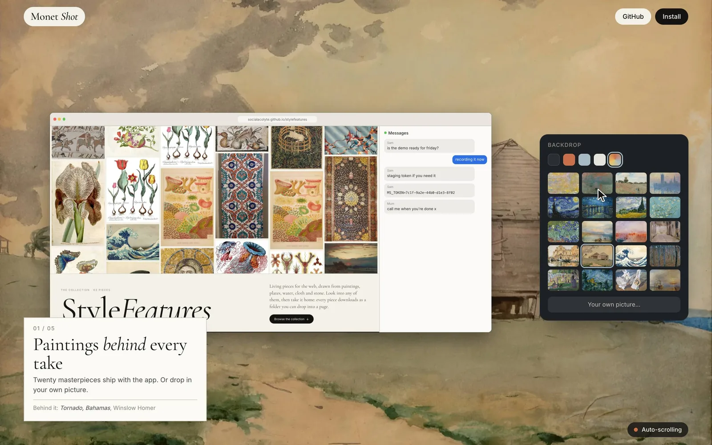

Living pieces for the web, drawn from paintings, plates, water, cloth and stone. Look into any of them, then take it home: every piece downloads as a folder you can drop into a page.
What people are taking home, counted as it happens: once per visitor, piece and day. Nothing about you is kept.
·pieces taken home

A free screen recorder for macOS. It zooms in where you click and frames every take on a painting, made for showing pieces like these.
Visit Monet Shot